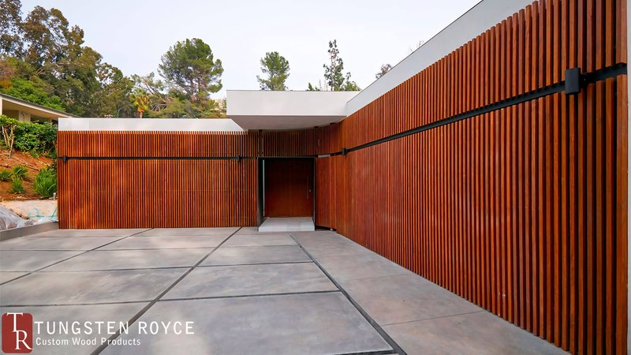
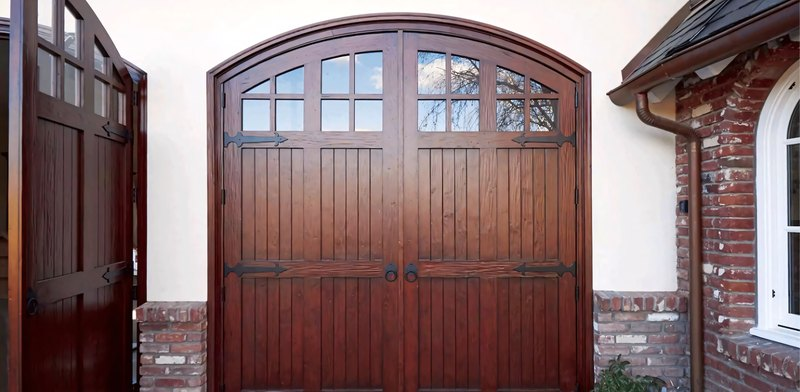

One building, no subcontractors
Tungsten Royce started in 2012 to build the garage doors nobody else would take on. Fourteen years later the shop on Boyd Street still does every step itself: milling, joinery, steel, glass setting, finish, and the drawings that come first.

Milled, joined, welded, sprayed. Here, by the people who answer the phone.
Woods and finishes. Softwoods for painted and stained carriage doors; hardwoods where the grain is the point.
Softwoods
- Western red cedar
- Alaskan yellow cedar
- Douglas fir
- Incense cedar
Hardwoods and exotics
- Walnut
- White oak
- Sapele
- African mahogany
- Ipe
- Red balau
Stains run from honey through bourbon to espresso and black. Paint is any colour you can name. Clear coats and oils on the hardwoods. Every finish is sprayed in our own booth before the door is crated.

How a job runs.
Talk
Tell us the opening, the house and the look. We answer with a drawing and a price, usually within the week.
Measure
Rough sizes first; then twelve measurements we check against each other before anything is cut.
Drawings
Shop drawings of your door, to the eighth of an inch, for you to sign before the build starts.
Build
Milled, joined, welded, finished and hung for a test fit in Santa Ana.
Deliver
On our truck within Southern California, crated freight to the rest of the country, install-ready.
Questions people ask.
Do you ship outside California?
Yes. Every door is built in Santa Ana and ships install-ready to all 50 states, with an installation guide. Within about 200 miles we deliver on our own truck.
Do you have standard sizes?
No. Every door is sized to its opening and built to order, in eighth-inch increments on all three axes.
How do you make sure the size is right?
Rough measurements first, to agree the design. Then twelve detailed measurements from you or your contractor, which we cross-reference for anything inconsistent. Then shop drawings for you to review before a single board is cut.
Who builds the doors?
We do. The lumber is milled here, the joints cut here, the steel welded here, the finish sprayed here. The only thing that leaves the building is the glass order.
Can the doors be automated?
Yes. Bifold and swinging doors run on operators we fit and tune in the shop, and overhead doors take a standard opener.
Are the doors ready to install when they arrive?
Yes. Hardware fitted, finish applied, drawings in the crate.